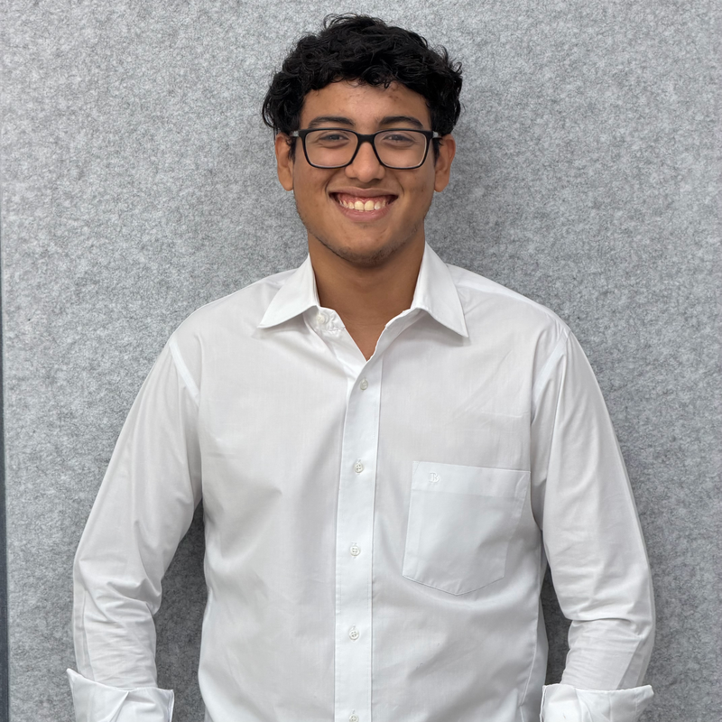

Construyendo soluciones tecnológicas mediante programación, automatización e innovación.
Soy estudiante de Ingeniería y Ciencias de la Computación Integradas en Key Institute, con interés en el desarrollo de software, la automatización y la ingeniería aplicada. Me apasiona crear soluciones que integren programación y tecnología para resolver problemas de manera eficiente.
He desarrollado proyectos utilizando tecnologías como Python, Java, Go, C++, SQL/MySQL, SolidWorks, EasyEDA y herramientas relacionadas con diseño de PCB, sistemas CNC y automatización.
Actualmente continúo ampliando mis conocimientos mediante proyectos prácticos, certificaciones y formación constante en áreas como desarrollo de software, bases de datos, automatización e inteligencia artificial.
Proyectos
Certificaciones
Idiomas
Reconocimientos
Certificados disponibles a través de LinkedIn o bajo solicitud.
Sistema de gestión y monitoreo ambiental orientado al reciclaje mediante recompensas, seguimiento de materiales y participación de usuarios.
Proyecto enfocado en la recopilación y análisis de variables atmosféricas para experimentación científica aplicada a hidrocohetes.
Herramienta de simulación desarrollada para analizar trayectorias, velocidad y altura máxima mediante modelos matemáticos y visualización gráfica.
Sistema robótico basado en sensores, automatización y control programable orientado a aplicaciones educativas y tecnológicas.
Plataforma de software orientada a la organización eficiente de información médica y procesos administrativos del sector salud.